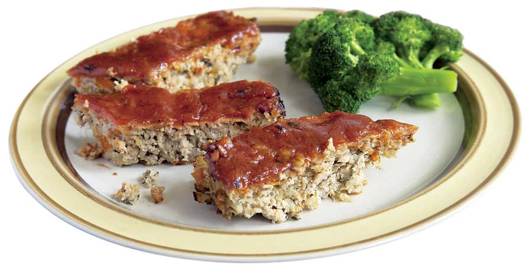

Barley seems like the perfect antidote to many of the things that ail us. Try this recipe for Turkey and Barley Meatloaf with Sage to bring this nutritious grain into your kitchen, and see Sweet and Savory Barley Recipes for barley nutritional information and more great barley recipes.
TURKEY AND BARLEY MEATLOAF WITH SAGE
Ingredients:
1 tsp extra virgin olive oil
1 cup onion, chopped
1/2 cup carrots, chopped
1/2 cup pearled barley, rinsed
1 1⁄4 cups chicken stock
1 1/2 pounds ground turkey
1 tbsp brown sugar
2 large eggs
1 tsp thyme leaves
2 tbsp fresh sage, chopped
1/2 tsp salt
1/2 tsp pepper
For topping:
3 tbsp ketchup
1 tbsp mustard
1 tbsp brown sugar
Instructions:
Heat the oil in a sauté pan, then add the onions and carrots, and sauté until the onions are clear. Add the barley and stock, and bring to a boil. Cook for 30 minutes. When all the stock is absorbed, transfer the mixture to a colander to drain and cool completely.
When the barley is cool, mix it with the turkey, brown sugar, eggs, thyme, sage, salt and pepper in a large bowl until well-combined. Oil a loaf pan, and transfer the mixture to the pan.
Bake at 350 degrees Fahrenheit for 1 hour. In a separate bowl, mix together the ketchup, mustard and brown sugar, and spread it over the loaf. Bake for 15 minutes more, or until the interior registers 160 degrees on a meat thermometer. Serves 8.
Chocolate Barley Bundt Cake Recipe
Greek Barley Salad Recipe
Japanese Barley Bowl Recipe
|
 EMILY HELLER You can make a tasty, easy topping for your meatloaf by mixing ketchup, mustard and brown sugar. |
|
|